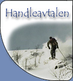

|
Handleavtalen går ut på at telemarksgruppas medlemmer kan handle sportsutstyr til meget gunstige priser. Alt utstyr er nedsatt over et kortere tidsrom, som regel noen dager. I år har styret inngått avtale med Lefstad Sport. Info om handledagene vil bli hengt opp på tavla på Stripa
og her på hjemmesiden.
Århundrets siste handledager vil gå av stabelen tirsdag, onsdag og torsdag i uke 45.
Det vil være 25% rabatt på bestillingsvarer skiutstyr og ordinære varer.
Unntak vil være klatreutstyr (15% rabatt), tilbudsvarer og våpen.
I forbindelse med handledagene som NTNUI har på Lefstad Sport den 9.-11. november (merk datoene) har Lefstad satt opp noen ekstra tilbud til oss i tillegg til de vanlige
tilbudene vi får. Det vil også være representanter i fra leverandørene alle dagene.
Åpningstider: Tirs.-ons: 9-17 og tors: 9-19 Husk å ta med gyldig medlemskort!
Eventuelle spørsmål kan rettes til sekretæren. |
|
 |